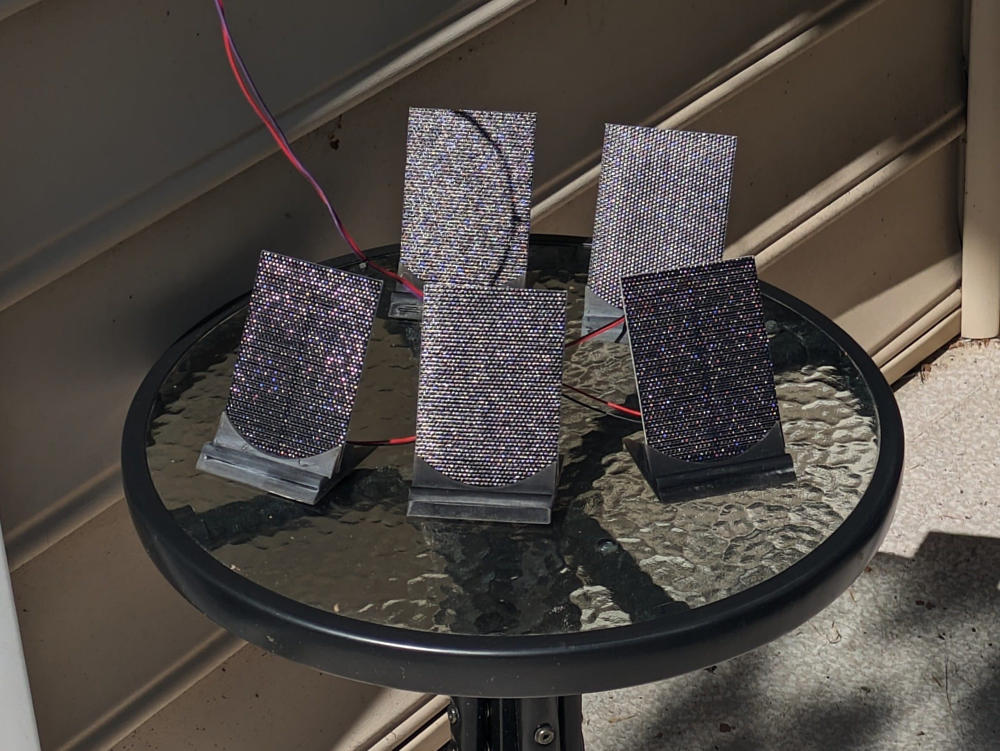
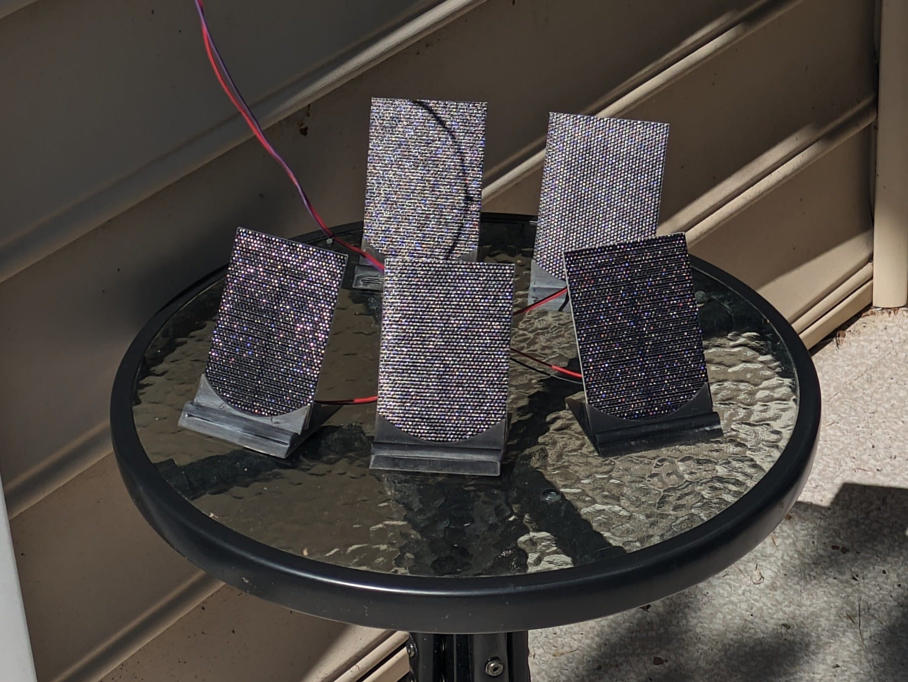

Tide Tracker Project - Basic
Published on: August 8, 2024
For a more comprehensive writeup of this project and the details of what went into it, see Tide Tracker Project - Advanced
Introduction and Motivation
I designed and assembled two solar-powered tide trackers. The graph of each tide tracker plots the tide height vs. time at a given location and is displayed on an e-ink display. The data is publicly available online from the National Oceanic and Atmospheric Administration (NOAA). The first tide tracker was a gift for a friend who lives directly on the water, and the second was a gift for a family member who likes to go sailing on a nearby river. In the gif below, you can see the graph undergoing an update, which occurs every two hours. Notice how after the update, the black bar on the graph progresses further along to the right. The black bar indicates the section of the graph corresponding to "now." More on that in the Description section below.
Tide Tracker 1 - Location: Fort Myers, FL
Tide Tracker 2 - Location: Red Bank, NJ
I decided to make two Tide Trackers for several reasons:
- The two recipients live near different rivers.
- The picture frames ship from Amazon as a four-pack at a low unit price. In order to fit all of the components into one enclosure, I had to stack and glue two frames on top of each other. Two of the frames match the lighter, sandy color scheme of my friend's house, and the other two match the darker, rustic color scheme of my family member's house. Perfect.
- Nearly 80% of the total time and effort for the project went into designing the physical layout and writing the code. These are one-time overhead costs, so the development work from the first unit can simply be used for free on all subsequent units (except for the cost of the parts and the time and energy required for the assembly of each unit, which are still substantial).
Constraints
-
Monetary cost
What am I, made of money? This constraint usually applies to most projects. -
Aesthetics
The display had to be large enough to be readable and stand out, but not so large to be prohibitively expensive (mainly due to the cost of a larger battery and screen). I also had to make a suitable frame to encase all of the electronics. The decision was also made to use a black-and-white-only e-ink display over a multicolored e-ink display for cost and simplicity. -
Solar powered
It only seemed natural for a device that tracks the tides to be solar powered. This also gives the project a unique and challenging constraint. Being a low-power device also means that it could be battery powered and therefore portable! Even after a few cloudy days, I still want the Tide Tracker to be able to run on its own for a few days, which affects the selected battery capacity. -
Time frame
The inception for the idea was September of 2023 upon visiting my friend's house for the first time. I didn't have any materials or implementation in mind until Black Friday in November of 2023, whereupon I began searching online for comparable project ideas. Ideally, I could just recreate an open-source project entirely, but I was not fully satisfied with what I saw, so I decided to make mine from scratch. The deadline was approximately one month later on Christmas of 2023.
Description
The plot below displays one snapshot of the tides in Fort Myers, FL on January 5, 2024.
Chart Elements:
- The y-axis represents the tide height*, and the x-axis represents time.
- The black bar along the curve of the plot represents the current section of the graph corresponding to "now."**
- The light regions represent the daytime and the dark shaded regions represent the nighttime.
- When the present time passes midnight and transitions into tomorrow, the entire graph
shifts to the left so that the center of the screen always focuses on noon of "today,"
the left side of the screen always extends 12 hours into "yesterday,"
and the right side always extends 12 hours into "tomorrow."
(One interesting observation is that as the year progresses toward the solstices and equinoxes, you can see the days get shorter/longer and the shaded sections of the nights get longer/shorter.) - Sunrise and sunset are displayed both in the upper-right corner of the screen as well as directly on the plot, centered on the verticals demarcating the separation between night and day.
- High tide and low tide times are displayed nearby to the corresponding peaks and valleys on the graph.
*height: You can just plot water height (in feet) on the y-axis and time on the x-axis, right?
I wish it were that simple. The depth of the water is not constant everywhere along the floor of the riverbed.
In some places, the riverbed is shallower and in other places, it is deeper. So relative to what point
do we measure the water surface height if not relative the continually fluctuating riverbed?
I have only barely scratched the surface, but to the best of my
understanding, the data used for the y-axis is measured as the present water level height relative
to a standard average water level height (aka the reference datum). But the average water level height
can be calculated a variety of different ways. Do you use the average water level at high tide?
At low tide? Over what time interval do you measure the water height to calculate the average height?
A standardized method for determining the average water height must be used.
The reference point used for this project is the mean lower low water (MLLW) level,
which is the standard water level reference point used for maritime navigation. The MLLW is defined
as the average low tide level over the past measurement period (typically 19 years).
The values on the graph's y-axis represent the height of the water relative to the MLLW of the geographic region.
**"now": My initial desire was to represent "now" by using a single point or a vertical line on the graph.
However, this is not possible because it would require the entire screen to be refreshed continuously in order to
update where the "now" indicator is on the screen.
This would consume a lot more power, and in order to make the device solar powered,
I needed to limit the power used by the device.
To that end, I designed the device to only update once every two hours.
An indicator of where "now" is on the plot
would still be helpful, but
due to the low refresh rate, when you look at the screen, "now" could correspond to
any section of the curve between the previous screen update and the next screen update.
Therefore, "now" cannot be represented by a
single point, but must be represented by a sweep along the curve corresponding
to the interval of the refresh period (2 hours).
Power
On the back of the device, there are five JST connectors for connecting solar panels and
a USB-C port for charging. The battery inside the device is a 4500mAH LiPo.
Note that for the second tide tracker (image on the right, below), I created an extension cable for the
solar panels' JST connectors so that the device could stay inside while the solar panels could
go outside.
 

I also designed and resin printed custom stands for the solar panels, which I think turned
out quite nicely.
3D model outlines shown below.
Extensibility: Varying the Location or Network
What if my friend moves to a new address and wants to track the tides at a different body of water?
What if they change their Wi-Fi network? These were two questions that needed to be
addressed when building the project. To this end, I included a webpage hosted on the device for configuring the
settings.
If the device becomes disconnected from the Wi-Fi network (which is necessary for the device to
retrieve tide data from NOAA)
then the the error image below appears on the screen.
The user can then open the back of the frame, locate the settings switch, and then toggle the switch to the "Setup" position, as shown below. This will boot the device into a different mode in which the on-board Raspberry Pi Zero W (controlling the entire device) broadcasts a Wi-Fi hotspot and hosts the settings webpage.
On a mobile device, the Wi-Fi network named "tide-tracker" will then be visible.
Upon connecting to the Wi-Fi network, the configuration page will open in a web browser on the user's phone.
From here, the Wi-Fi network credentials that the tide tracker will connect to
and the desired tide monitoring location can be set.
The "NOAA Station ID#" dropdown will allow for any* of the
NOAA tidal measuring stations to be selected.
* Please see the Advanced Tide Tracker Project writeup for more information about the NOAA stations and data processing.